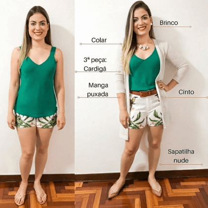
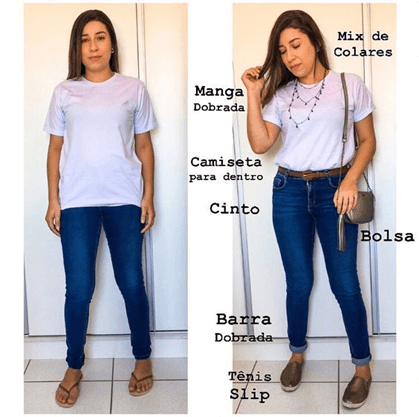
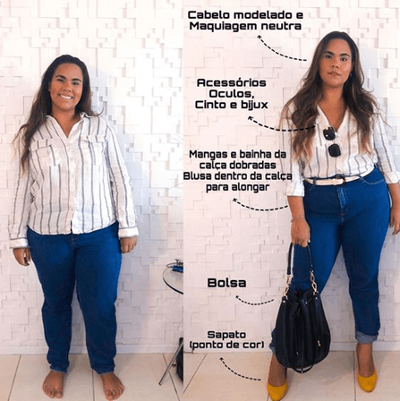
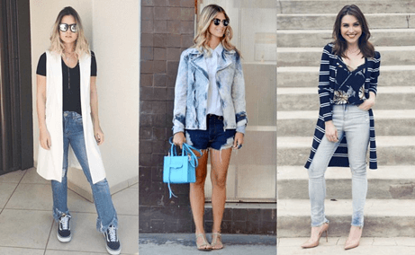
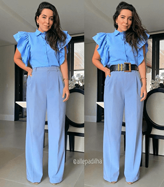

Dicas e Truques
Aprender alguns truques de estilo para aplicar no nosso dia a dia facilita muito na correria do cotidiano. Aqui vamos aprender alguns truques de estilo para melhorar o visual em minutos e assim como no módulo “closet inteligente” que aprendemos a usar peças coringas, vamos aprender a montar vários looks com uma só peça de roupa.

As vezes alguns truques básicos poder dar uma diferença enorme no look! A base desse look é uma blusinha em um tom lindo e um shortede tecido os demais são adicionais que deu um up no look. Vale sempre apostar em misturar acessórios como cintos e colares.
A base desse look é uma camisa branca e uma calça jeans e os demais são adicionais que deu um up no look. Vale sempre apostar em misturar acessórios! Transformação total!
A base desse look é uma camisa listrada e uma calça jeans e os demais são adicionais que deu um up no look.
Truque: Ilusão de Ótica
Na hora de comprar, precisamos ter um olhar aguçado para a peça, babados sempre vão dar mais volume e se colocador onde já temos vantagens naturalmente do nosso biotipo ( vamos estudar sobre os biotipos ) como por exemplo: quadril, ombros ou seios, tendem a aumentar o volume nos dando um visual de grande volume.
Truque: Terceira Peça
A terceira peça pode fazer milagres! Quando você vai se vestir, geralmente as escolhas não passam de um vestido ou de uma blusa e a parte de baixo, seja saia, calça ou shorts, certo? A produção pode ficar muito mais interessante se você jogar uma terceira peça. Uma jaquetinha, um blazer ou até mesmo um colete, se o dia estiver quente. A terceira peça demonstra um esforço em criar um look diferente e que fuja da mesmice.
Todos nós temos uma terceira peça no guarda-roupa: um blazer, colete, casaco, echarpe, lenço, quimono, cardigan. O poder dessa terceira peça é que ela pode deixar nosso look mais interessante, com mais personalidade, e em muitos casos também dar uma certa ilusão de outra silhueta, afinando-a. Treine seu olhar e deixe aquele look que poderia parecer sem graça, de calça e blusa preta, muito mais interessante com o uso da terceira peça.
Alongando a silhueta e realçando as curvas
Nesse exemplo, a primeira foto sem o cinto e com o look todo monocromático, deixou ela visualmente mais alta, cria uma ilusão de otica que as pernas são maiores, a calça cintura alta ajuda bastante nesse truque também. A outra foto o cinto preto criou um contraste, uma diferença e separação no look criando um corte horizontal e chamando bastante a atenção que diminuiu o efeito de continuidade.
Outro exemplo de ilusão de ótica com saia, na primeira foto o cinto preto acompanha a cor da saia dando uma ilusão de alongamento. A outra foto o cinto rosa criou um contraste, uma diferença e separação no look criando um corte horizontal e chamando bastante a atenção que diminuiu o efeito de continuidade.
Truque: Realça X Alonga
Conseguem ver a diferença entre os dois modelos de calça? Na primeira foto a calça skinny é um modelo sensual e que realça ainda mais as curvas! E justamente por isso, evidencia bastante a região do quadril. Na calça da segunda foto, a flare, a modelagem aberta na barra ajuda a criar uma silhueta mais longínea, pois além do salto ficar um pouco escondido, a cintura alta da a impressão de pernas maiores.